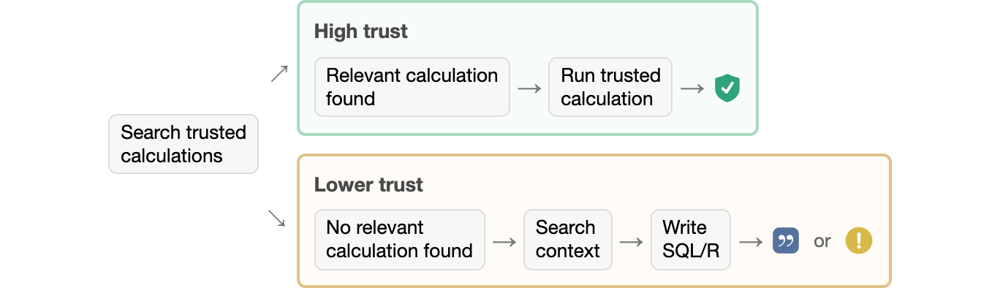
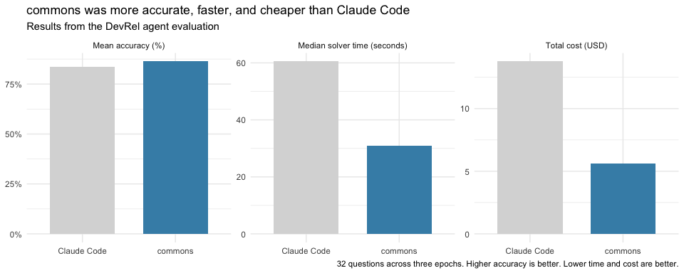

This package is highly experimental.
commons helps data scientists build trustworthy data agents.
Data teams typically have trusted code that they use to analyze their data and build reports and apps. commons leverages their expertise, situating that information in a series of prompts and tools designed to create an accurate, fast, and cost-effective agent.
Trusted calculations can come from R code (as measures), data dictionary definitions, Snowflake semantic views, or Databricks metric views.
Installation
To install the package, run:
# install.packages("pak")
pak::pak("posit-dev/commons/pkg-r")Get started
commons uses ellmer to access LLMs, so you will need access to one of ellmer’s supported providers.
We recommend building commons agents with the help of the agent skill that ships with the package. The skill helps coding agents build, evaluate, and improve commons agents.
To make the skill available to Posit Assistant or Codex, copy the skill and its references to .agents/skills:
skill <- system.file("skills", "commons", package = "commons")
dir.create(".agents/skills", recursive = TRUE, showWarnings = FALSE)
file.copy(skill, ".agents/skills", recursive = TRUE)For Claude Code, copy the skill and its references to .claude/skills:
skill <- system.file("skills", "commons", package = "commons")
dir.create(".claude/skills", recursive = TRUE, showWarnings = FALSE)
file.copy(skill, ".claude/skills", recursive = TRUE)The Introduction to commons vignette also explains the structure of a commons agent and the creation process.
Trusted answers
There are two provenance paths available to a commons agent: when users ask questions for which there is trusted code, the agent follows the “happy path,” running that code and reporting the result. If the user asks a question for which trusted code is not available, the agent writes custom R or SQL code, leaning on additional context provided to the agent.
Answers display provenance according to the analysis path followed, so users can determine how much trust to put in a given answer.
For more information, see the Introduction to commons vignette.

Evaluation
The DevRel agent is an example commons agent that answers questions about adoption, engagement, and growth across Posit’s open-source projects. The DevRel agent repository contains an evaluation that compares performance between the commons agent and Claude Code. Both have access to the same underlying data.
In this evaluation, the commons agent had higher mean accuracy (86.3% vs. 83.5%), took less time to answer questions (a median of 31.0 vs. 60.5 seconds), and used fewer output tokens (243,403 vs. 439,188 total).

In the evaluation, both harnesses use Claude Sonnet 5 at medium effort. The evaluation runs each of 32 questions three times. Questions require either a numeric answer, a table, a nuanced response, or recognition that the available data cannot answer them.